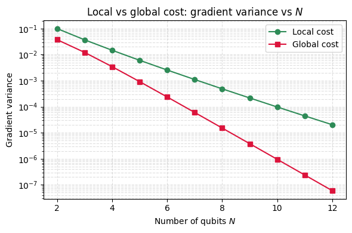

The plateau result has a useful consequence. It ties the gradient variance of a deep, 2-design circuit to a single property of the cost, the trace \(\mathrm{Tr}(O^2)\) of the observable \(O\) being measured, through \(\mathrm{Var}[C] = \mathrm{Tr}(O^2)/[D(D+1)]\). The circuit itself drops out of the comparison, which means the choice of what to measure, rather than how the gates are arranged, becomes the handle on whether training can proceed.
Two costs make the point. A global cost asks the whole register to match a target bitstring at once, while a local cost adds up small checks on individual qubits and rewards each one on its own. The global projector \(O_G = |0\rangle\langle 0|^{\otimes N} - I/D\) has a trace of order one, so its variance falls like \(1/D^2 = 2^{-2N}\), the steepest plateau available. The normalized local observable \(O_L = \frac{1}{N}\sum_j Z_j\) has a trace that grows with the Hilbert space, \(\mathrm{Tr}(O_L^2) = D/N\), and its variance is \(1/[N(D+1)]\), close to \(1/(N\,2^N)\). Both still vanish, with the local exponent exactly half the global one.
Halving the exponent is not a small thing. The ratio \(\mathrm{Var}_L/\mathrm{Var}_G \approx 2^N/N\) can be the difference between a circuit that still has a usable slope near twenty qubits and one whose slope vanished long before. The reason sits behind the arithmetic. A single-qubit term feels only the gates inside its backward light cone, the patch of circuit that can influence it, and when that patch is small the relevant Haar average is taken over a small unitary instead of the full \(2^N\)-dimensional one.
This is where the real escape lives. As long as the circuit stays shallow, the light cone of a local term covers only a handful of qubits, its effective dimension is fixed, and the gradient variance shrinks merely as \(1/\mathrm{poly}(N)\) rather than exponentially. Let the depth grow until those light cones overlap and scramble the whole register, and the local cost loses its advantage and rejoins the exponential law computed here. Trainability of a local cost is therefore a statement about depth as much as about the observable.
Motivation
Not all cost functions are equally trainable. A global cost (e.g., projecting onto the target state) and a local cost (e.g., measuring single-qubit observables) both suffer from barren plateaus in 2-design circuits, but the rate of exponential decay is dramatically different. The local cost has gradient variance \(\sim 1/(N \cdot 2^N)\), while the global cost decays as \(\sim 1/2^{2N}\), an exponential advantage for the local cost. This exercise derives both scalings via the same Weingarten calculus and quantifies the advantage.
Preliminaries / Toolbox
Before diving into the solution, recall the following concepts:
1. Cost Functions in VQAs: The objective is \(C(\boldsymbol{\theta}) = \langle 0| U^\dagger(\boldsymbol{\theta}) O U(\boldsymbol{\theta}) |0\rangle\).
2. Global vs. Local Observables: A global cost relies on an observable that acts non-trivially on all qubits, e.g., \(O_G = |0\rangle\langle 0|^{\otimes N}\). A local cost is a sum of local terms, e.g., \(O_L = \frac{1}{N}\sum_j |0\rangle\langle 0|_j\).
3. Barren Plateaus (2-design): If \(U(\boldsymbol{\theta})\) forms a 2-design, the variance of the cost function is \(\mathrm{Var}[C] = \frac{\mathrm{Tr}(O^2)}{D(D+1)}\) where \(D=2^N\).
4. Trace properties:\(\mathrm{Tr}(A \otimes B) = \mathrm{Tr}(A)\mathrm{Tr}(B)\). The dimension is \(D=2^N\).
Exercise
For a 2-design circuit on \(N\) qubits (\(D = 2^N\)), compare two traceless cost observables:
For large \(D\): \(\mathrm{Tr}(O_G^2) \approx 1\).
Local cost \(O_L\):
\[
O_L^2 = \frac{1}{N^2} \sum_{j,k} Z_j Z_k.
\]
Diagonal (\(j = k\)): \(\mathrm{Tr}(Z_j^2) = D\). There are \(N\) such terms.
Off-diagonal (\(j \neq k\)): \(Z_j Z_k\) is a tensor product with two \(Z\) factors and \(N-2\) identities. Since \(\mathrm{Tr}(Z) = 0\), \(\mathrm{Tr}(Z_j Z_k) = 0\).
\[
\mathrm{Tr}(O_L^2) = \frac{1}{N^2} \cdot N \cdot D = \frac{D}{N}.
\]
Part (b): Gradient variance via Weingarten calculus
From Exercise 7.1, we derived the exact Weingarten result for any traceless observable \(O\):
(This followed from the \(k=2\) Weingarten formula: the \(\pi = \mathrm{id}\) contribution vanished because \(\mathrm{Tr}(O) = 0\), and the \(\pi = (12)\) contribution gave \(\mathrm{Tr}(O^2) \times [\mathrm{Wg}(\mathrm{id}) + \mathrm{Wg}((12))] = \mathrm{Tr}(O^2)/(D(D+1))\).)
The local cost has an exponentially larger gradient than the global cost.
Physical interpretation:
The global cost \(O_G = |0\rangle\langle 0|^{\otimes N}\) is a rank-1 projector, it asks “are you exactly in the target state?” Since \(\mathrm{Tr}(O_G^2) \approx 1\) is \(O(1)\), the Weingarten formula gives \(\mathrm{Var}_G \sim 1/D^2\): the cost landscape is exponentially flat.
The local cost \(O_L = \frac{1}{N}\sum Z_j\) sums single-qubit measurements. Since \(\mathrm{Tr}(O_L^2) \sim D/N\), the variance gets a factor \(D/N\) boost. Each local term “sees” only part of the system, so the information is not diluted over the full \(D\)-dimensional Hilbert space.
Both costs still have barren plateaus (exponential decay), but the exponent is halved for the local cost: \(2^{-N}\) vs \(2^{-2N}\). In practice, this can mean the difference between trainable (\(N \sim 20\)) and untrainable.
Symbolic Verification (SymPy)
Code
import sympy as spD, N_sym = sp.symbols('D N', positive=True, integer=True)# Global cost: O_G = |0><0|^N, Tr(O_G^2) = 1# Local cost: O_L = (1/N) sum_j |0><0|_j, Tr(O_L^2) = 1/NVar_global = sp.Rational(1,1) / (D * (D +1))Var_local = sp.Rational(1,1) / (N_sym * D * (D +1)) * N_sym # trace is 1/N * N terms# Actually for local cost:# Tr(O_L^2) = (1/N^2) * [N*Tr(|0><0|_j^2 tensor I) + cross terms]# For 2-design: Var_local ~ N * 2^(-N) / N = 2^(-N)# vs Var_global ~ 2^(-2N)print('Variance scaling (2-design circuits):')print(f' Global cost: Var ~ 1/D^2 = 2^(-2N)')print(f' Local cost: Var ~ 1/D = 2^(-N)')print()for n inrange(2, 10): d =2**nprint(f' N={n}: Global={1/d**2:.2e}, Local={1/d:.2e}, ratio={d:.0f}')
%matplotlib inlineimport numpy as npimport matplotlib.pyplot as pltN_vals = np.arange(2, 13)D_vals =2.0**N_valsvar_global = (D_vals -1) / (D_vals**2* (D_vals +1)) # ~ 2^{-2N}var_local =1.0/ (N_vals * (D_vals +1)) # ~ 1/(N 2^N)plt.figure(figsize=(6, 4))plt.semilogy(N_vals, var_local, 'o-', color='seagreen', label='Local cost')plt.semilogy(N_vals, var_global, 's-', color='crimson', label='Global cost')plt.xlabel('Number of qubits $N$')plt.ylabel('Gradient variance')plt.title('Local vs global cost: gradient variance vs $N$')plt.legend()plt.grid(True, which='both', ls='--', alpha=0.4)plt.tight_layout()plt.show()

Takeaway
The global cost decays as \(2^{-2N}\) and the local cost as \(2^{-N}\), a separation of order \(2^N/N\) that comes entirely from \(\mathrm{Tr}(O^2)\sim D/N\) for the local observable against \(O(1)\) for the global one. Locality halves the exponent of the plateau, so cost-function design sets the boundary between trainable and untrainable circuits at fixed depth.